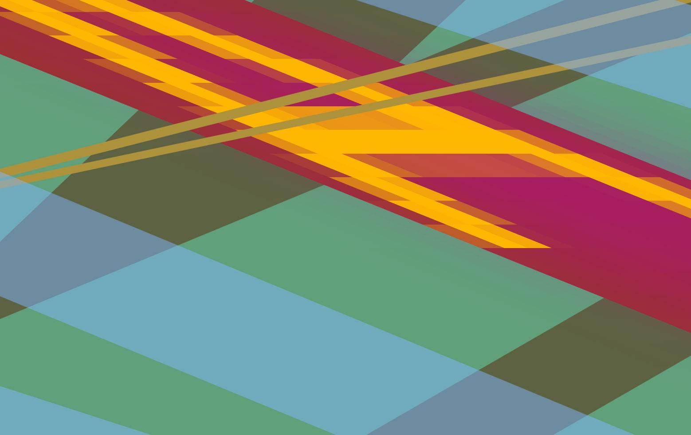
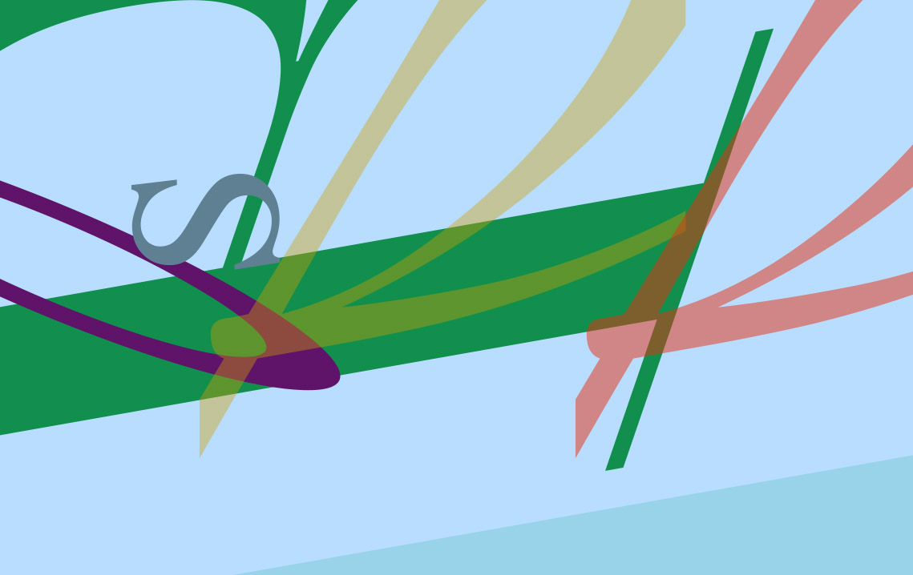
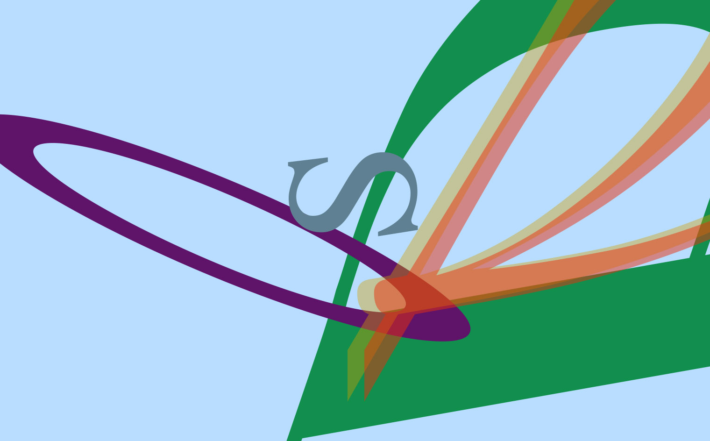
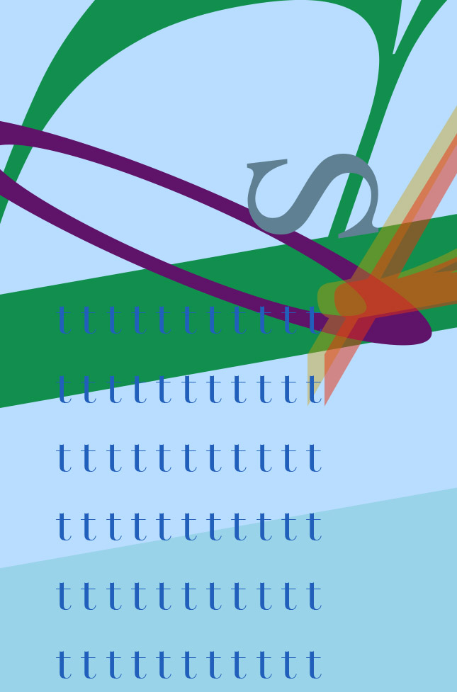

---
layout: page
title: Typographic Landscapes
author: Ojus Doshi
description: Typographic scale exercises in the browser
category: project
printready: true
caption: "Through CSS, I tried to transform typography into a pictoral, graphic, or illustrative form that evokes an abstract landscape."
---



